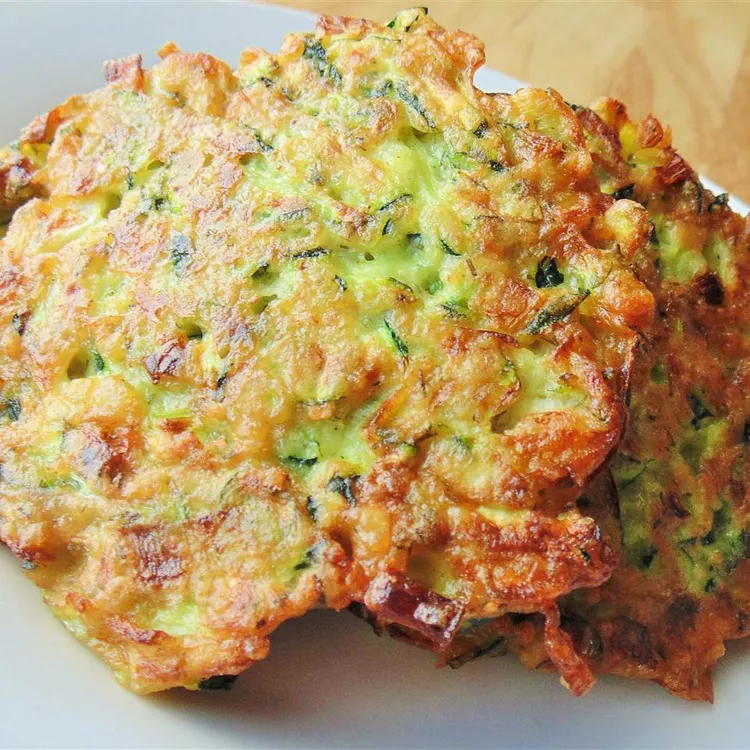

Crispy Zucchini Fritters recipe

Description
Keeping with the fried theme, these zucchini fritters are a great alternative to latkes for one of the many nights of Hanukkah. Similar leek fritters called keftes are a favorite for Syrian Jews at Hanukkah.
Ingredients
- 3 ⅓ cups grated zucchini (courgette)
- 6 spring onions, chopped
- 1 bunch fresh dill, chopped
- salt to taste
- 1 egg, beaten
- 2 tablespoons all-purpose flour
- 1 clove garlic, minced
- 2 tablespoons vegetable oil
How to make this recipe
- Combine zucchini, spring onions, and dill in a large bowl. Stir in salt. Add egg; stir until well-combined. Stir in flour and garlic until batter comes together.
- Heat oil in a large skillet over medium-high heat. Drop tablespoonfuls of batter into hot oil. Fry until browned and cooked through, about 3 minutes per side.
Go back